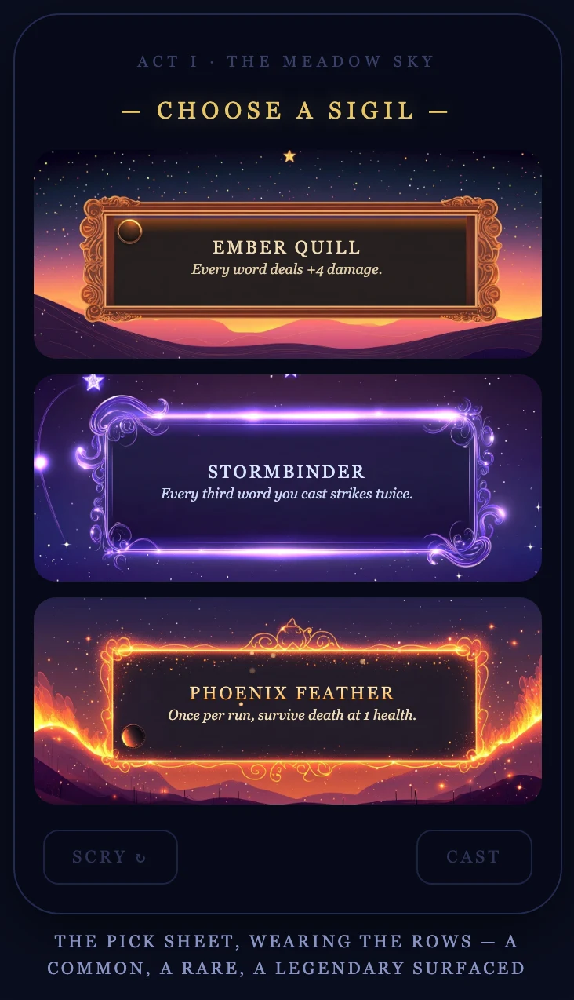
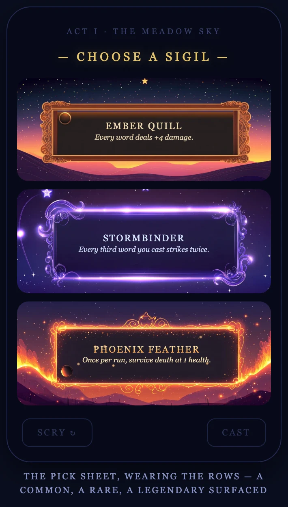
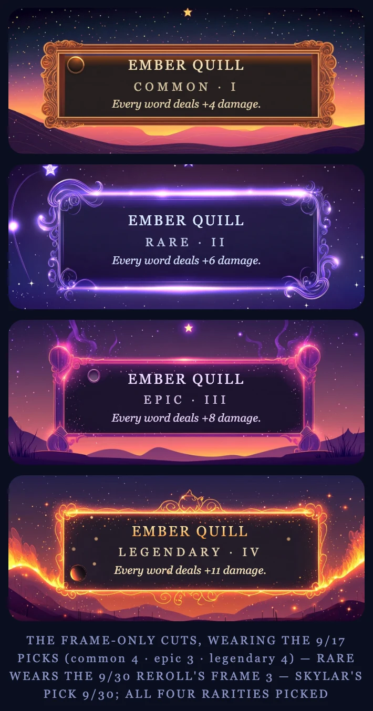
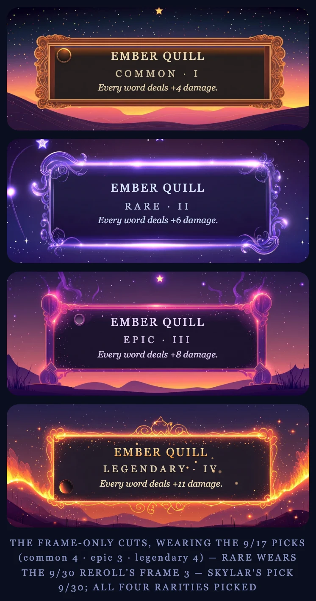
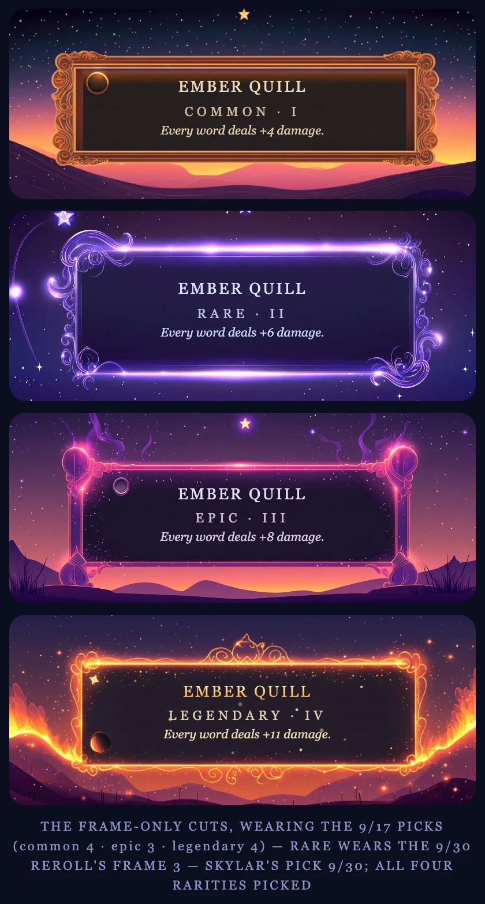
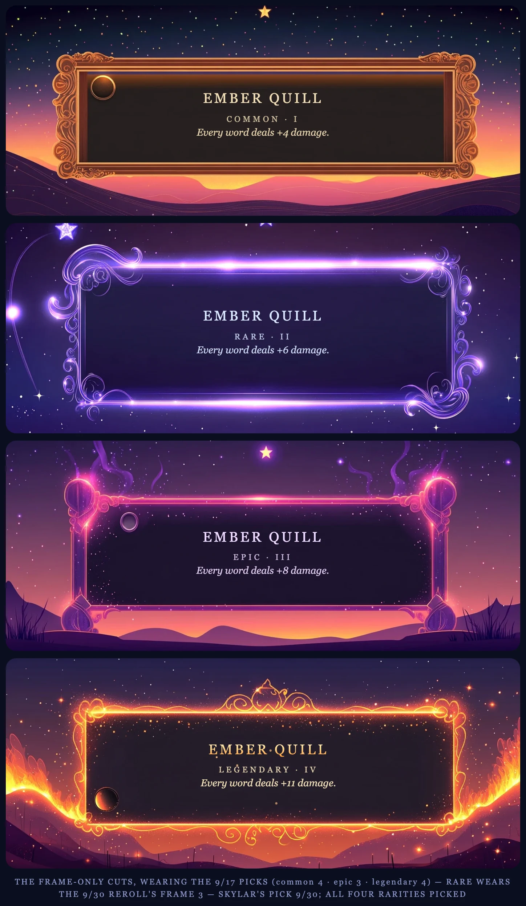
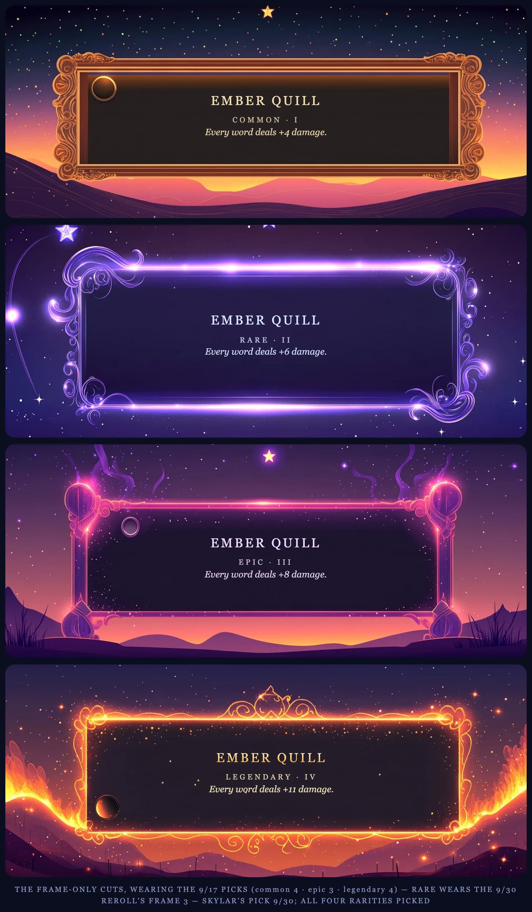

The Swirl Wears the Rows Alone
Skylar's rulings, worn together across the devices: the rare is THE SWIRL (roll 69ed39bf), and the icon roundels are gone — all seven of the little circled glyphs (↯ ❋ ❦) stripped from the banners, so the name and effect line center in each frame's own panel.
I · Before / After — iPhone 16
Round 2's Swirl with the roundels, against the same sheet with them gone.
With iconsiPhone 16 · 393 × 852

IconlessiPhone 16 · 393 × 852

II · The Pick Sheet
Smallest and largest phone at true relative scale, then the tablets' fixed mock — all iconless.
iPhone SE · 375 × 667

iPhone 16 Pro Max · 440 × 956
Any iPad · mock fixed at 350 px
III · The Four-Rarity Ladder
Ember Quill I → IV, iconless, at each device's column width — true relative scale.
iPhone SE · column 339 px

iPhone 16 · column 357 px

iPhone 16 Pro Max · column 404 px

iPad mini · column 708 px

iPad Air 11″ · Pro 13″ · landscape · column capped at 780 px

IV · The Read
- All seven roundels are gone — phone mock and ladder both — and the text centers itself in each panel (the panels are flex; nothing needed re-measuring).
- More room for words: on the SE, Phoenix Feather's effect line fits on one line again.
- Two small circles remain, and they are paint, not icons: the knob on the common's upper-left frame and the dark orb at the legendary's lower-left are baked into the MJ art itself (the Swirl's jewel-socket sibling had one too — the Swirl doesn't). If those should go as well, that's an art retouch on the cuts — say the word.
- Not applied yet: when this look is blessed, the live sigils page gets the Swirl as the rare pick and the roundel-free rows in one pass.